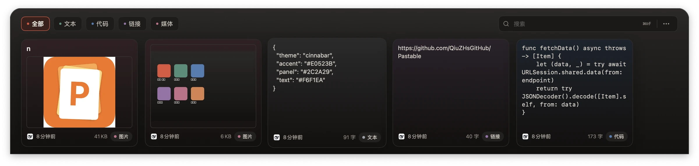

呼之即来
全局快捷键（默认 ⌘⇧V）在任意应用上方唤出贴合屏幕底部的浮层。打开时不抢键盘焦点，你继续打字，它只是出现。
macOS 剪贴板管理器 · 版本 1.2.0
Pastable 把最近复制的一切收在屏幕底部的一层浮层里。一个快捷键，搜到它，贴回去——不打断你手上的事。

功能
把「复制 → 切换 → 找 → 粘贴」压缩成一次呼出。剩下的，交给已经记住的内容。
全局快捷键（默认 ⌘⇧V）在任意应用上方唤出贴合屏幕底部的浮层。打开时不抢键盘焦点，你继续打字，它只是出现。
精确或模糊搜索标题与全文，多关键词同时匹配；分类、来源应用与命中原因一并高亮，几秒钟定位。
文本、代码、链接、图片、文件自动识别分类。图片预生成缩略图与元数据，列表滚动无需解码原图。
点击卡片或按 ↩ 直接粘贴到当前应用；⌘1–9 / Fn1–9 数字快贴，也可以选择去除格式后再贴。
保留时长与容量上限都可以设置。第一次发现历史超出限制时，会先问你「清理 / 全部保留 / 稍后」。
历史默认只存在这台 Mac。需要多台同步时，可选用你自己 iCloud 账户的私有 CloudKit 数据库。
外观
不透明分层、实色文字、克制的朱砂强调。面板始终位于 Dock 之上，卡片不会被遮住，也不会悬空；切换桌面或进入全屏，它依旧在原位。
快捷键
默认键位已经足够顺手；全局唤起组合可以在设置里改成你习惯的那一个。
呼出时不会抢走当前应用的键盘焦点，输入仍然属于你正在用的 App。
剪贴板历史保存在应用沙盒内的本地数据库，默认不离开这台 Mac。
只有你主动开启时，历史才会通过你自己 iCloud 账户的私有 CloudKit 数据库同步；开发者无法查看或获取。
仅「自动粘贴」需要辅助功能权限，用于向当前应用模拟 ⌘V；不授权时，其余功能照常使用。